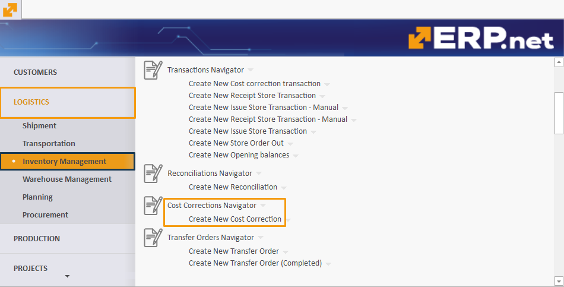
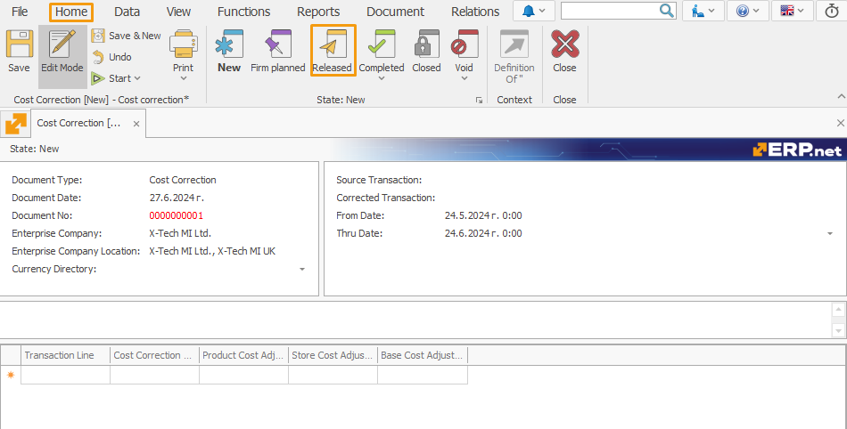
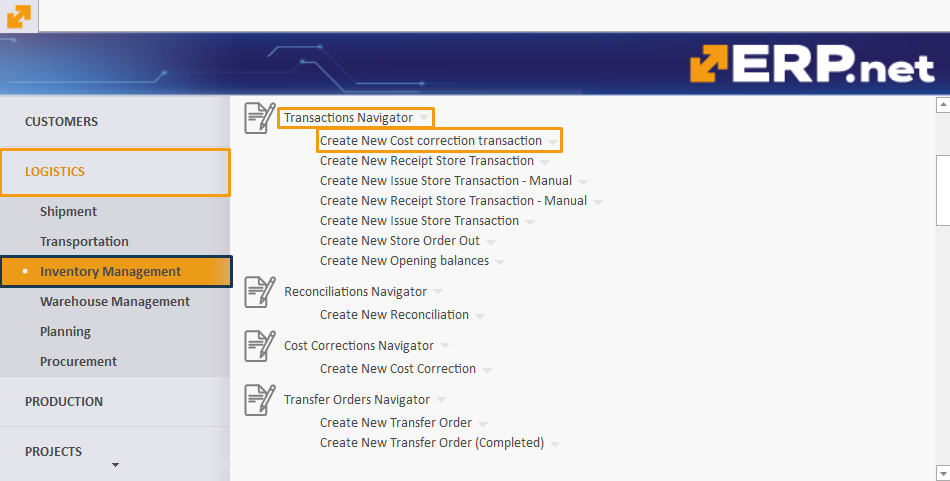
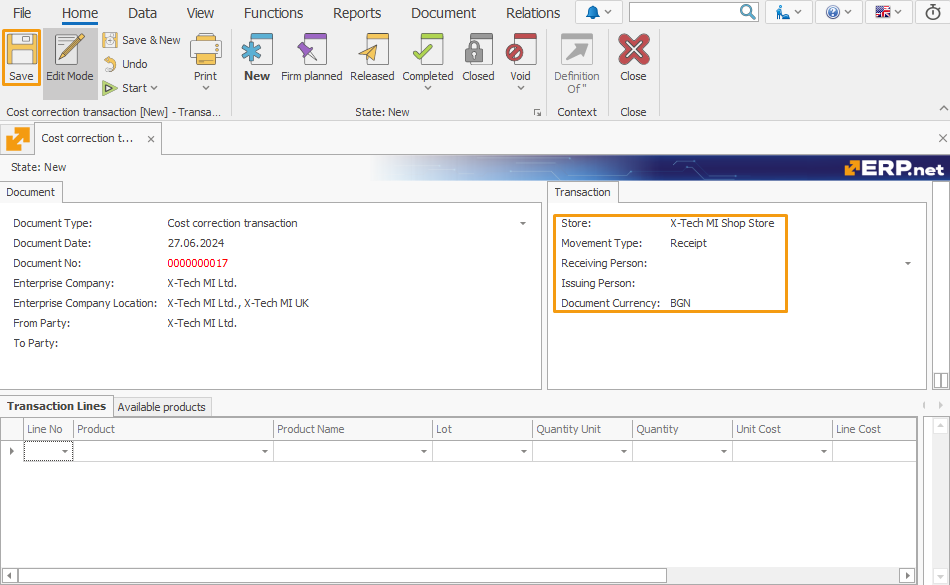
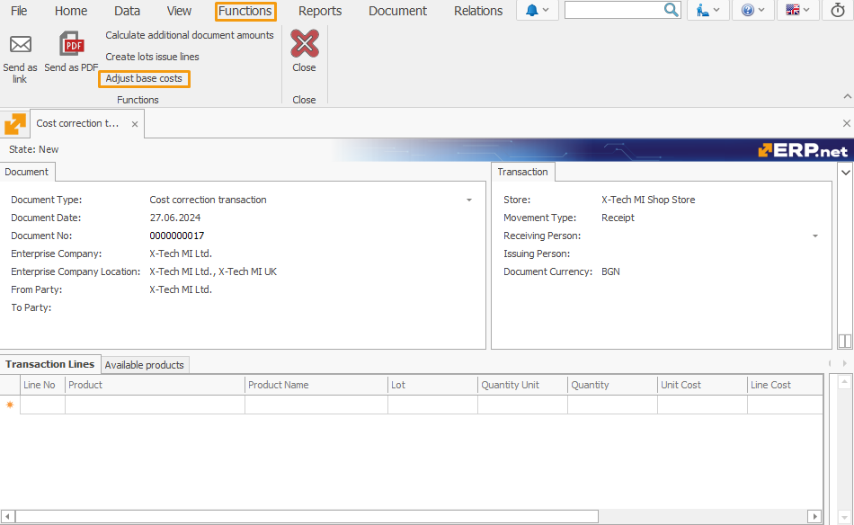

Adjusted Base Cost
Over time, differences between the base cost and the original cost of products can accumulate, leading to inaccuracies in the final cost calculation.
The Adjusted Base Cost feature eliminates the need to issue cost correction documents for issue store transactions, as it automatically aligns each Line Base Cost with its respective Base Cost Adjustment, whenever such is present.
This speeds up the process of original cost calculation, limits the frequence of making cost corrections, and decreases the possibility of producing errors and miscalculations when taking into account all adjustments that have taken place for the base cost of products.
Using Adjusted Base Cost
Here, you'll find detailed steps on how to effectively perform base cost adjustment.
Periodic Execution
The Adjusted Base Cost feature operates regularly, typically at the end of every month.
This ensures timely adjustments to reflect current inventory conditions following monthly corrections.
Cost correction
To ensure the accuracy of the base cost, you first need to make a monthly cost correction.
The Cost correction adjusts costs over a specified period.
To initiate a new cost correction:
- Go to Logistics -> Inventory Management -> Cost Correction Navigator -> Create New Cost Correction.

Creating a Cost Correction
To create a cost correction:
- Fill in the required fields, including the start and end of the period.
- Click Save.
- After saving, navigate to Functions and select Recalculate corrections for the period.

Once prepared:
- Go to Home and then Released to change the document stage.

- Confirm changing the document status to Released.
Special document type
The next step is creating a document to execute the function, using the Cost creation transaction type.
To create this document:
- Navigate to Logistics -> Inventory Management -> Transaction Navigator -> Create New Cost creation transaction.

Creating a Warehouse Receipt with Cost creation transaction type
Fill in necessary fields such as Store, Movement Type (set as Receipt), and Document Currency.
- Click Save.

After saving:
- Go to Functions and click Adjust base costs.

The feature calculates variances between Base Cost and Adjusted Cost for each product within the warehouse, recording the variance in Base Cost upon posting the warehouse receipt to align both figures.
- Click Released to change the document stage.

- Confirm changing the status to Released.
A specialized Cost Source named Adjustment captures and stores values within the Base Cost of the warehouse receipt.
During subsequent adjustments, any recorded discrepancies in Base Cost are offset against Adjusted Cost, maintaining equilibrium as quantities normalize to zero.